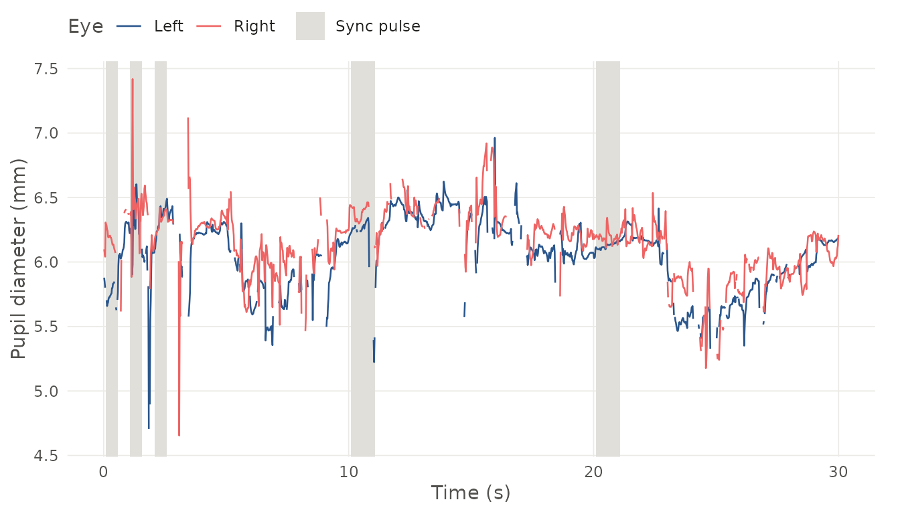
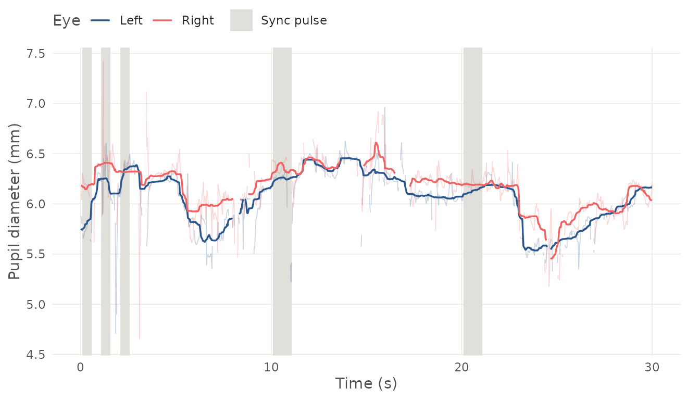
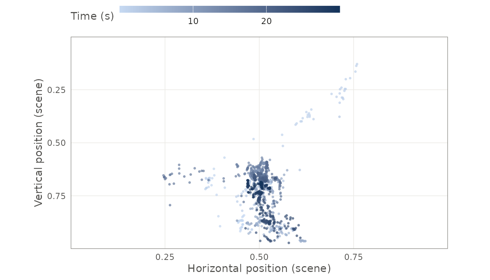

The Tobii Pro Glasses 3 save each recording as a folder on the SD
card. Inside are the scene video, a metadata file called recording.g3 and
three gzipped JSON files with one record per line:
gazedata.gz, imudata.gz and
eventdata.gz. glasses3 reads these files directly, without
going through Tobii Pro Lab. The data come back as tibbles, so this guide also loads dplyr to work with
them.
Reading a recording
read_g3() takes the path to a recording folder. The
package includes the first 30 seconds of a recording, with the
identifying metadata replaced by placeholders.
rec <- read_g3(g3_example())
rec
#> Tobii Pro Glasses 3 recording
#> Name: Example recording
#> Participant: example
#> Created: 2025-01-01 12:00:00 UTC
#> Duration: 30.0 s
#> Gaze: 1497 samples, 90.7% valid
#> Firmware: 1.14.5+nudelsoppa
#> Sampling: 50 Hz
#> $gaze 1497 rows
#> $imu 3835 rows
#> $events 10 rowsThe result is a list with the metadata and a tibble for each stream.
The gaze data have one row per sample. Samples
where the glasses lost the eyes keep their row, with NA
values.
names(rec$gaze)
#> [1] "recording" "time" "gaze2d_x"
#> [4] "gaze2d_y" "gaze3d_x" "gaze3d_y"
#> [7] "gaze3d_z" "left_origin_x" "left_origin_y"
#> [10] "left_origin_z" "left_direction_x" "left_direction_y"
#> [13] "left_direction_z" "left_pupil" "right_origin_x"
#> [16] "right_origin_y" "right_origin_z" "right_direction_x"
#> [19] "right_direction_y" "right_direction_z" "right_pupil"
#> [22] "valid_left" "valid_right" "valid"
summary(rec)
#> Duration: 30.0 s, 1497 samples at 50 Hz (largest gap 0.020 s)
#> Valid: 90.7% gaze point, 84.8% left, 80.3% right
#> Left pupil (mm):
#> Min. 1st Qu. Median Mean 3rd Qu. Max. NAs
#> 4.706 5.886 6.117 6.067 6.264 6.963 228
#> Right pupil (mm):
#> Min. 1st Qu. Median Mean 3rd Qu. Max. NAs
#> 4.629 6.001 6.192 6.152 6.312 7.419 295
#> Sync port pulses: 0 in, 5 outThe valid column says whether a
sample has a gaze point. The glasses can estimate gaze from one eye, so
a sample can be valid while one of valid_left and
valid_right is FALSE.
Several recordings
list_g3_recordings() searches a folder, such as the root
of an SD card, and lists every recording it finds with its name,
participant, start time and duration. The readers
read_g3_gaze(), read_g3_imu() and
read_g3_events() accept this list, or a vector of paths,
and stack the recordings into one tibble. The recording column says which folder each
row comes from.
recordings <- list_g3_recordings(dirname(g3_example()))
recordings
#> # A tibble: 1 × 6
#> recording path name participant created duration
#> <chr> <chr> <chr> <chr> <dttm> <dbl>
#> 1 recording /home/runner/work/_t… Exam… example 2025-01-01 12:00:00 30
gaze <- read_g3_gaze(recordings)
events <- read_g3_events(recordings)The functions for sync port pulses and epochs below work on such data too. They match the samples of each recording to that recording’s pulses, and the plots draw one panel per recording.
Pupil diameter
The sync port connects the glasses to other equipment. A stimulus
computer can send a pulse at each stimulus onset, which the glasses
record with the direction "in". The
glasses can also send pulses that another device records, with the
direction "out". The functions use "in" by
default. The example recording only holds pulses sent by the glasses, so
the examples here use direction = "out".
plot_g3_pupil(rec, direction = "out")
The grey areas mark the sync port pulses.
g3_syncport() lists them with their onsets and offsets.
g3_syncport(rec$events, direction = "out")
#> # A tibble: 5 × 5
#> recording pulse onset offset duration
#> <chr> <int> <dbl> <dbl> <dbl>
#> 1 recording 1 0.0785 0.574 0.495
#> 2 recording 2 1.07 1.57 0.499
#> 3 recording 3 2.07 2.57 0.5
#> 4 recording 4 10.1 11.1 0.994
#> 5 recording 5 20.1 21.1 1.000g3_add_syncport() keeps every sample and adds the sync
port state, the number of the most recent pulse and the time since its
onset. This suits models of the whole recording, where cutting epochs
would drop the samples between pulses.
tagged <- g3_add_syncport(rec$gaze, rec$events, direction = "out")
tagged |>
filter(syncport == 1) |>
select(time, pulse, pulse_time)
#> # A tibble: 173 × 3
#> time pulse pulse_time
#> <dbl> <int> <dbl>
#> 1 0.0982 1 0.0197
#> 2 0.118 1 0.0397
#> 3 0.138 1 0.0597
#> 4 0.158 1 0.0798
#> 5 0.178 1 0.0998
#> 6 0.198 1 0.120
#> 7 0.218 1 0.140
#> 8 0.238 1 0.160
#> 9 0.258 1 0.180
#> 10 0.279 1 0.200
#> # ℹ 163 more rowsLong recordings are hard to read at 50 samples per second. The
smooth argument draws a running
median over the raw trace, here one second wide. Short blinks do
not pull it down, and the data themselves are not changed.
plot_g3_pupil(rec, direction = "out", smooth = 1)
Epochs
g3_epochs() cuts the samples into epochs around each pulse onset. It numbers the epochs
in the epoch column and adds the time relative to the
onset. After g3_pupil_long(), there is one row per sample
and eye, which suits ggplot2 and mixed-effects models.
ep <- g3_epochs(rec$gaze, rec$events, before = 0.5, after = 5, direction = "out")
pupil <- g3_pupil_long(ep)
head(pupil)
#> # A tibble: 6 × 13
#> recording time gaze2d_x gaze2d_y gaze3d_x gaze3d_y gaze3d_z valid epoch
#> <chr> <dbl> <dbl> <dbl> <dbl> <dbl> <dbl> <lgl> <int>
#> 1 recording 0.0180 0.460 0.842 49.0 -208. 549. TRUE 1
#> 2 recording 0.0180 0.460 0.842 49.0 -208. 549. TRUE 1
#> 3 recording 0.0381 0.457 0.846 58.0 -237. 616. TRUE 1
#> 4 recording 0.0381 0.457 0.846 58.0 -237. 616. TRUE 1
#> 5 recording 0.0581 0.455 0.850 70.7 -279. 718. TRUE 1
#> 6 recording 0.0581 0.455 0.850 70.7 -279. 718. TRUE 1
#> # ℹ 4 more variables: epoch_time <dbl>, pulse <int>, eye <chr>, pupil <dbl>The onsets do not have to be sync port pulses.
g3_epochs() also takes a data frame with an
onset column, such as the trial
onsets of an experiment, and copies its other columns to the
samples of each epoch.
trials <- data.frame(onset = c(2, 12, 22), condition = c("a", "b", "a"))
trial_epochs <- g3_epochs(rec$gaze, trials, before = 0.5, after = 3)
count(trial_epochs, epoch, condition)
#> # A tibble: 3 × 3
#> epoch condition n
#> <int> <chr> <int>
#> 1 1 a 175
#> 2 2 b 174
#> 3 3 a 174An experiment script can also send events to the glasses through
their API, each with a tag and an object. g3_api_events()
extracts these API events from the event data,
and its output can be passed to g3_epochs() in the same
way. The example recording has none.
Given epochs, plot_g3_pupil() puts the time from the
onset on the x axis. Each eye gets its own panel, with a thin line per
epoch and the mean drawn on top.
plot_g3_pupil(ep)
Before analysis, g3_quality() shows how much data each
epoch holds: the number of samples, the proportion with a gaze point and
with data for each eye, and the longest gap
without a gaze point. Epochs with too much missing data can then be
dropped.
quality <- g3_quality(ep)
quality
#> # A tibble: 5 × 8
#> recording epoch samples duration valid valid_left valid_right max_gap
#> <chr> <int> <int> <dbl> <dbl> <dbl> <dbl> <dbl>
#> 1 recording 1 253 5.05 0.913 0.862 0.842 0.220
#> 2 recording 2 275 5.49 0.92 0.865 0.855 0.220
#> 3 recording 3 275 5.49 0.92 0.844 0.898 0.220
#> 4 recording 4 274 5.47 0.934 0.901 0.653 0.180
#> 5 recording 5 275 5.49 0.909 0.873 0.869 0.260For models of the whole time course, such as generalised additive
mixed models, g3_downsample() averages the samples into
time bins. Bins are counted from the onset, and
a bin where more than half of the samples are missing is left empty.
Character columns, such as a participant or condition label, are dropped
unless you name them in by, and the groups of a grouped
tibble are kept.
binned <- g3_downsample(pupil, bin = 0.1)
head(binned)
#> # A tibble: 6 × 14
#> recording epoch eye epoch_time samples time gaze2d_x gaze2d_y gaze3d_x
#> <chr> <int> <chr> <dbl> <int> <dbl> <dbl> <dbl> <dbl>
#> 1 recording 1 left -0.1 4 0.0481 0.454 0.853 65.6
#> 2 recording 1 left 0 5 0.138 0.447 0.869 162.
#> 3 recording 1 left 0.1 4 0.228 0.454 0.866 476.
#> 4 recording 1 left 0.2 5 0.319 0.456 0.884 115.
#> 5 recording 1 left 0.3 5 0.419 0.457 0.907 37.8
#> 6 recording 1 left 0.4 5 0.519 0.414 0.848 174.
#> # ℹ 5 more variables: gaze3d_y <dbl>, gaze3d_z <dbl>, valid <dbl>, pulse <int>,
#> # pupil <dbl>glasses3 leaves pupil preprocessing to other packages. PupillometryR, gazer and eyeris handle blink removal, interpolation and baseline correction.
Gaze position
plot_g3_gaze() shows where the wearer looked in the
scene camera image. The top of the plot is the top of the video
frame.
plot_g3_gaze(rec)
g3_gaze_angles() turns the gaze direction of each eye
into azimuth and elevation in degrees, relative to straight ahead of
the glasses, and adds the vergence angle between
the eyes.
angles <- g3_gaze_angles(rec$gaze)
angles |>
select(left_azimuth, left_elevation, vergence) |>
summary()
#> left_azimuth left_elevation vergence
#> Min. :-24.647 Min. :-23.003 Min. : 0.3509
#> 1st Qu.: 0.685 1st Qu.:-12.245 1st Qu.: 4.2129
#> Median : 2.172 Median : -7.240 Median : 5.0712
#> Mean : 2.015 Mean : -8.667 Mean : 5.4612
#> 3rd Qu.: 3.983 3rd Qu.: -5.307 3rd Qu.: 6.1301
#> Max. : 25.299 Max. : 18.841 Max. :39.3296
#> NAs :228 NAs :228 NAs :384g3_gaze_velocity() adds the angular
velocity of each eye from one sample to the next, in degrees per
second. It is not smoothed, and can be the starting point for detecting
fixations and saccades.
velocity <- g3_gaze_velocity(rec$gaze)
velocity |>
select(left_velocity, right_velocity) |>
summary()
#> left_velocity right_velocity
#> Min. : 0.2704 Min. : 0.2612
#> 1st Qu.: 4.1465 1st Qu.: 3.7903
#> Median : 8.6165 Median : 9.0639
#> Mean : 29.6006 Mean : 38.8253
#> 3rd Qu.: 25.2244 3rd Qu.: 32.5353
#> Max. :802.9578 Max. :1727.0960
#> NAs :286 NAs :359Clock time
g3_add_clock_time() adds the date and time of each
sample, from the start time stored in the recording. The clock time helps to align the data with other devices
that log the time of day.
g3_add_clock_time(rec$gaze, rec) |>
select(time, clock_time) |>
head()
#> # A tibble: 6 × 2
#> time clock_time
#> <dbl> <dttm>
#> 1 0.0180 2025-01-01 12:00:00
#> 2 0.0381 2025-01-01 12:00:00
#> 3 0.0581 2025-01-01 12:00:00
#> 4 0.0782 2025-01-01 12:00:00
#> 5 0.0982 2025-01-01 12:00:00
#> 6 0.118 2025-01-01 12:00:00Scene video
The scene camera films at 25 frames per second.
g3_add_frame() adds the number of the video frame shown at each sample, counted from 0, so
that codes made frame by frame from the video, such as areas of
interest, can be joined to the samples. The first frame is taken to
start with the recording. If an event visible in the video shows
otherwise, set start to the time of the first frame.
g3_add_frame(rec$gaze) |>
select(time, frame, gaze2d_x, gaze2d_y) |>
head()
#> # A tibble: 6 × 4
#> time frame gaze2d_x gaze2d_y
#> <dbl> <int> <dbl> <dbl>
#> 1 0.0180 0 0.460 0.842
#> 2 0.0381 0 0.457 0.846
#> 3 0.0581 1 0.455 0.850
#> 4 0.0782 1 0.445 0.873
#> 5 0.0982 2 0.444 0.876
#> 6 0.118 2 0.445 0.869Damaged files and gaps
A file that was cut off, for example by an interrupted copy from the
SD card, is still read. The readers skip the damaged lines, return the
intact samples and give a warning that names the skipped lines. A file
whose compressed data are damaged cannot be read and gives an error.
g3_fill_gaps() then inserts empty rows where samples are
missing, so the time series is evenly spaced again before
preprocessing.
filled <- g3_fill_gaps(rec$gaze)
count(filled, inserted)
#> # A tibble: 1 × 2
#> inserted n
#> <lgl> <int>
#> 1 FALSE 1497IMU data
The glasses sample the accelerometer and gyroscope together, while the magnetometer runs separately at a lower rate. Each row of the IMU data therefore has missing values for the sensors that were not sampled at that moment.
head(rec$imu)
#> # A tibble: 6 × 11
#> recording time accel_x accel_y accel_z gyro_x gyro_y gyro_z mag_x mag_y
#> <chr> <dbl> <dbl> <dbl> <dbl> <dbl> <dbl> <dbl> <dbl> <dbl>
#> 1 recording 0.00338 NA NA NA NA NA NA -12.5 31.9
#> 2 recording 0.0119 -0.462 -9.96 -1.69 -17.0 -3.84 -25.3 NA NA
#> 3 recording 0.0204 -0.527 -9.94 -1.64 -17.6 -4.05 -24.7 NA NA
#> 4 recording 0.0288 -0.607 -9.87 -1.55 -18.0 -4.37 -24.1 NA NA
#> 5 recording 0.0373 -0.678 -9.83 -1.52 -18.2 -4.80 -23.3 NA NA
#> 6 recording 0.0457 -0.722 -9.82 -1.48 -18.4 -5.35 -22.2 NA NA
#> # ℹ 1 more variable: mag_z <dbl>